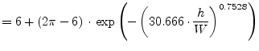
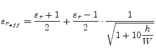
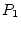
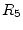
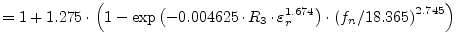
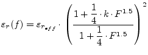
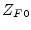

|
|
The electrical parameters of microstrip lines which are required for circuit design are impedance, attenuation, wavelength and propagation constant. These parameters are interrelated for all microstrips assuming that the propagation mode is a transverse electromagnetic mode, or it can be approximated by a transverse electromagnetic mode. The Y and S parameters can be found in section 9.20.
Harold A. Wheeler [16] formulated his synthesis and analysis equations based upon a conformal mapping's approximation of the dielectric boundary with parallel conductor strips separated by a dielectric sheet.
For wide strips () he obtains the approximation
| (11.1) |
For narrow strips ( ) he obtains the approximation
| (11.2) |
The formulae are applicable to alumina-type substrates ( ) and have an estimated relative error less than 1 per cent.
|
|
The following formulas obtained by rational function approximation give accuracy of for which is the range of importance for most engineering applications. M.V. Schneider [17] found these approximations for the complete elliptic integrals of the first kind as accurate as for .
| (11.3) |
The equations for the single microstrip line presented by E. Hammerstad and Ø. Jensen [18] are based upon an equation for the impedance of microstrip in an homogeneous medium and an equation for the microstrip effective dielectric constant. The obtained accuracy gives errors at least less than those caused by physical tolerances and is better than for and for .
with
|  | (11.6) |
The comparison of the expression given for the quasi-static impedance as shown in fig. 11.3 has been done with respect to E. Hammerstad and Ø. Jensen. It reveals the advantage of closed-form expressions. The impedance step for Wheelers formulae at is approximately .
Harold A. Wheeler [19] gives the following approximation for
narrow strips () based upon the characteristic impedance
 . The estimated relative error is less than 1%.
. The estimated relative error is less than 1%.
| (11.7) |
For narrow strips ( ):
| (11.8) |
| (11.9) | ||
| (11.10) |
For wide strips ():
 |
(11.11) |
| (11.12) | ||
| (11.13) |
The approximate function found by M.V. Schneider [17] is meant to have an accuracy of for and an accuracy of for .
|  | (11.14) |
The accuracy of the E. Hammerstad and Ø. Jensen [18] model is better than 0.2% at least for and .
with
The formulas given for the quasi-static characteristic impedance and
effective dielectric constant in the previous sections are based upon
an infinite thin microstrip line thickness . A finite
thickness can be compensated by a reduction of width. That means
a strip with the width  and the finite thickness appears to be
a wider strip.
and the finite thickness appears to be
a wider strip.
Harold A. Wheeler [19] proposes the following equation to account for the strip thickness effect based on free space without dielectric.
| (11.19) |
For the mixed media case with dielectric he obtains the approximation
| (11.20) |
M.V. Schneider [17] derived the following approximate expressions.
Additional restrictions for applying these expressions are , and . Notice also that the ratio is divergent for .
E. Hammerstad and Ø. Jensen are using the method described by Wheeler [19] to account for a non-zero strip thickness. However, some modifications in his equations have been made, which give better accuracy for narrow strips and for substrates with low dielectric constant. For the homogeneous media the correction is
| (11.22) |
and for the mixed media the correction is
| (11.23) |
By defining corrected strip widths, and , the effect of strip thickness may be included in the equations (11.4) and (11.15).
 |
(11.24) | |
| (11.25) |
Dispersion can be a strong effect in microstrip transmission lines due to their inhomogeneity. Typically, as frequency is increased, increases in a non-linear manner, approaching an asymptotic value. Dispersion affects characteristic impedance in a similar way.
The dispersion formulae given by Kirschning and Jansen [20] is meant to have an accuracy better than 0.6% in the range , and , i.e. up to about for substrates.
| (11.27) | ||
|  | (11.28) | |
| (11.29) | ||
| (11.30) | ||
| (11.31) | ||
| normalised frequency in | (11.32) |
Dispersion of the characteristic impedance according to [21] can be applied for the range , and for substrates with and is is given by the following set of equations.
| (11.33) | ||
| (11.34) | ||
| (11.35) | ||
| (11.36) | ||
|  | (11.37) | |
| (11.38) |
| (11.39) | ||
|  | (11.40) | |
| (11.41) |
| (11.42) | ||
| (11.43) | ||
| (11.44) | ||
| (11.45) | ||
| (11.46) | ||
| (11.47) | ||
| (11.48) | ||
| (11.49) |
Finally the frequency-dependent characteristic impedance can be written as
The abbreviations used in these expressions are for the normalized frequency as denoted in eq. (11.32) and for the microstrip width normalised with respect to the substrate height. The terms and denote the static values of microstrip characteristic impedance and effective dielectric constant. The value is the frequency dependent effective dielectric constant computed according to [20].
R.H. Jansen and M. Kirschning remark in [21] for the
implementation of the expressions on a computer,  , and
should be restricted to numerical values less or equal 20 in
order to prevent overflow.
, and
should be restricted to numerical values less or equal 20 in
order to prevent overflow.
The values obtained by the approximate dispersion formula as given by
E. Yamashita [22] deviate within 1% in a wide frequency
range compared to the integral equation method used to derive the
functional approximation. The formula assumes the knowledge of the
quasi-static effective dielectric constant. The applicable ranges of
the formula are
 ,
and
. Though the lowest usable
frequency is limited by
, the propagation constant for
frequencies less than
has been given as the
quasi-static one.
,
and
. Though the lowest usable
frequency is limited by
, the propagation constant for
frequencies less than
has been given as the
quasi-static one.
|  | (11.51) |
 |
(11.52) | |
 |
(11.53) |
The dispersion formula presented by M. Kobayashi [23], derived by comparison to a numerical model, has a high degree of accuracy, better than 0.6% in the range , and any (no frequency limits).
| (11.54) |
 |
(11.55) | |
| (11.56) | ||
| (11.57) | ||
| (11.58) |
Based upon measurements of dispersion curves for microstrip lines on alumina substrates 0.025 and 0.050 inch thick W. J. Getsinger [24] developed a very simple , closed-form expression that allow slide-rule prediction of microstrip dispersion.
 |
(11.59) |
Also based upon measurements of microstrip lines 0.1, 0.25 and 0.5 inch in width on a 0.250 inch thick alumina substrate Getsinger [25] developed two different dispersion models for the characteristic impedance.
 |
(11.62) |
 |
(11.63) |
with
| (11.64) |
The dispersion formulae of E. Hammerstad and Ø. Jensen [18] give good results for all types of substrates (not as limited as Getsinger's formulae). The impedance dispersion model is based upon a parallel-plate model using the theory of dielectrics.
|
(11.65) |
with
| (11.66) | ||
| (11.67) |
| (11.68) |
The authors T. C. Edwards and R. P. Owens [27] developed a dispersion formula based upon measurements of microstrip lines on sapphire in the range and up to . The procedure was repeated for several microstrip width-to-substrate-height ratios () between 0.1 and 10.
| (11.69) |
with
| (11.70) |
where  is in millimeters and
is in millimeters and  is in gigahertz. Their new
dispersion equation involving the polynomial, which was developed to
predict the fine detail of the experimental
versus frequency curves, includes two empicical parameters. However,
it seems the formula is not too sensitive to changes in substrate
parameters.
is in gigahertz. Their new
dispersion equation involving the polynomial, which was developed to
predict the fine detail of the experimental
versus frequency curves, includes two empicical parameters. However,
it seems the formula is not too sensitive to changes in substrate
parameters.
P. Bhartia and P. Pramanick [28] developed dispersion equations without any empirical quantity. Their work expresses dispersion of the dielectric constant and characteristic impedance in terms of a single inflection frequency.
For the frequency-dependent relative dielectric constant they propose
| (11.71) |
where
| (11.72) |
Dispersion of the characteristic impedance is accounted by
| (11.73) |
whence
| (11.74) |
Martin V. Schneider [29] proposed the following equation for the dispersion of the effective dielectric constant of a single microstrip line. The estimated error is less than 3%.
| (11.75) |
with
| (11.76) |
For the dispersion of the characteristic impedance he uses the same wave guide impedance model as Getsinger in his first approach to the problem.
| (11.77) |
The attenuation of a microstrip line consists of conductor (ohmic) losses, dielectric (substrate) losses, losses due to radiation and propagation of surface waves and higher order modes.
| (11.78) |
Dielectric loss is due to the effects of finite loss tangent
 . Basically the losses rise proportional over the
operating frequency. For common microwave substrate materials like
ceramics with a loss tangent less than
the dielectric losses can be neglected compared to the conductor
losses.
. Basically the losses rise proportional over the
operating frequency. For common microwave substrate materials like
ceramics with a loss tangent less than
the dielectric losses can be neglected compared to the conductor
losses.
For the inhomogeneous line, an effective dielectric filling fraction give that proportion of the transmission line's cross section not filled by air. For microstrip lines, the result is
whereas
| dielectric loss tangent |
E. Hammerstad and Ø. Jensen [18] proposed the following
equation for the conductor losses. The surface roughness of the
substrate is necessary to account for an asymptotic increase seen in
the apparent surface resistance with decreasing skin depth. This
effect is considered by the correction factor . The current
distribution factor  is a very good approximation provided that
the strip thickness exceeds three skin depths (
).
is a very good approximation provided that
the strip thickness exceeds three skin depths (
).
| (11.80) |
with
whereas
| sheet resistance of conductor material (skin resistance) | |
| specific resistance of conductor | |
| skin depth | |
| current distribution factor | |
| correction term due to surface roughness | |
| effective (rms) surface roughness of substrate | |
|  | wave impedance in vacuum |